Overview
As part of Healf's Personalisation Pod, the goal was growth: lift AOV and LTV, with recommendation CTR and repeat-purchase rate as the leading indicators. The funnel leaked at every stage — high interest, but low confidence turning views into purchases, and few people coming back. Our bet: if users connect a wearable (Oura, Apple Watch and more) via the Terra API, continuous passive health data makes recommendations relevant enough to move the whole funnel — CTR → conversion → AOV → return rate — turning a one-time transaction into a compounding engagement loop. It lifted AOV by 23%.
My Role
Senior Product Designer · Product Manager · Engineering team
Tools
Figma · Linear · Claude Code · UX Pilot · PostHog
Key Goal
Data acquisition, AOV & engagement
Product Designer × 1
Design & research
Led design strategy, research synthesis, and end-to-end UX across activation, onboarding and results.
Product Manager
Roadmap & metrics
Owned roadmap prioritisation, stakeholder alignment, and success metrics.
Engineering × 2
Build & integration
Built wearable integrations via the Terra API, the recommendation engine, and front-end implementation.
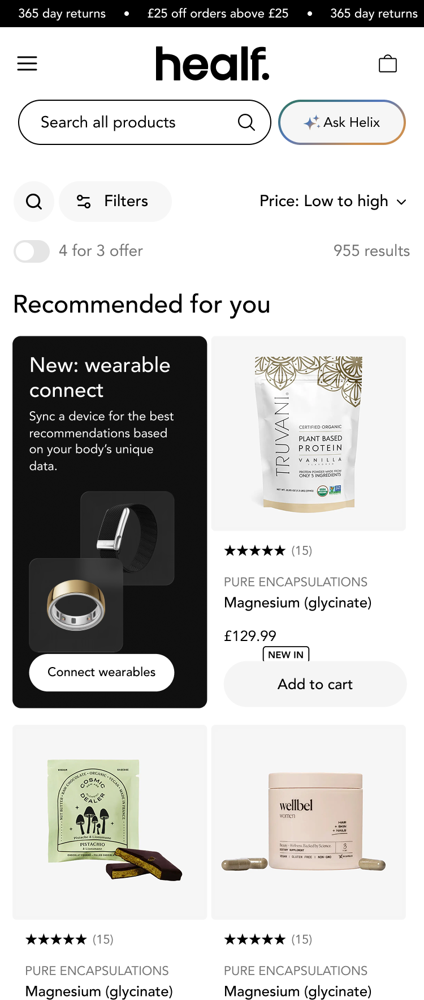
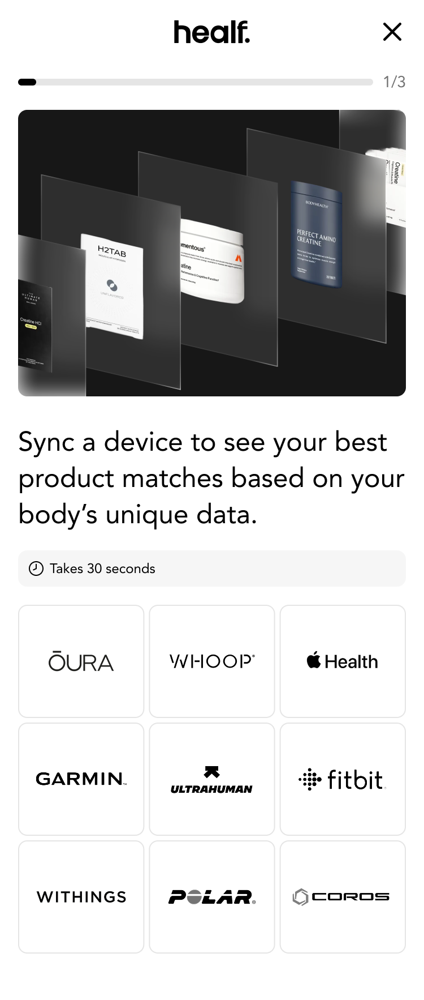
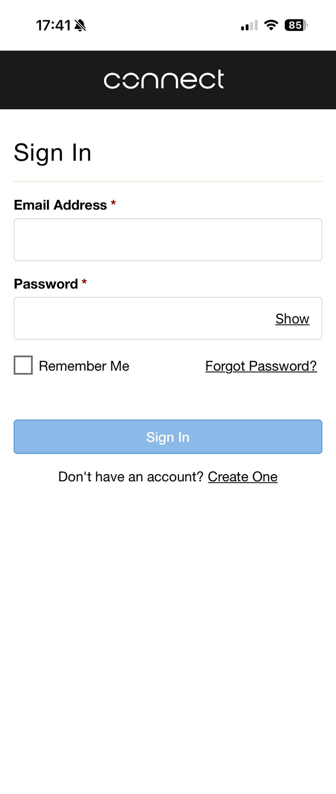
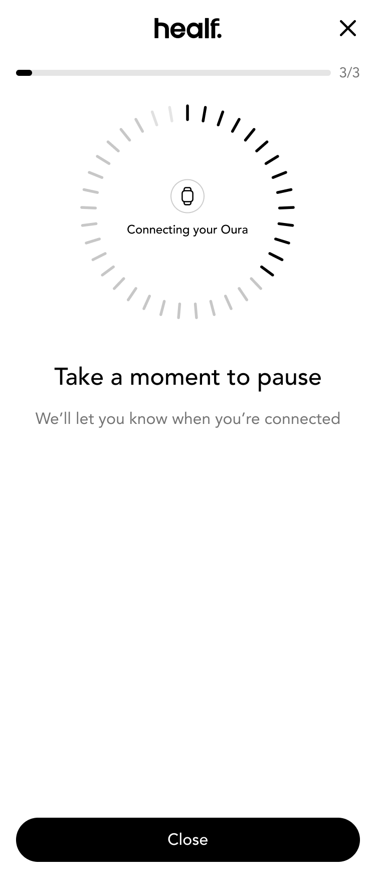
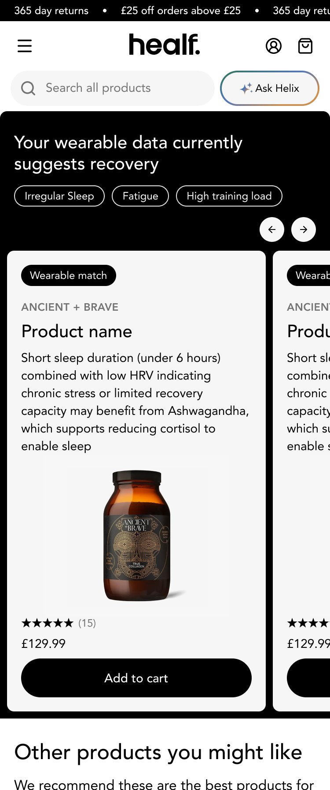
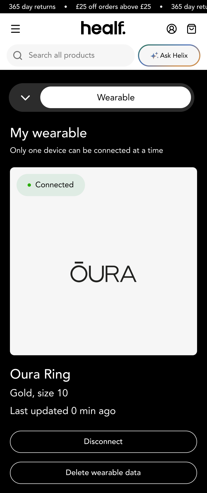
Problem
Users were browsing but not buying. With a broad catalogue and no strong signal, product recommendations felt generic — so people lacked the confidence to know what was actually right for them.
4
Average products viewed per session
with no conversion.
1.2%
Click-through rate on recommended products
recommendations weren't compelling enough to act on.
65%
Of users didn't return after purchase
a one-time transaction, not a relationship.
The broken loop
Limited user data
Generic recommendations
Low confidence
No purchase
No new signal
The data confirmed
High interest, low conversion · Low interaction with recommended products · One-time purchase. The loop fed itself: without richer data, recommendations stayed generic — and generic recommendations never earned enough trust to generate new data.
Problem
Same insight, told as a funnel: interest was high at the top, but each step down to a repeat purchase lost most of the people above it. The biggest leak was recommendation relevance — the step a wearable signal was meant to fix.
Bar widths are illustrative. * placeholder — pending the real funnel figures; 1.2% CTR and 35% 30-day return are the measured values.
Solution
To break the loop we had to swap generic recommendations for personalised ones — and that meant a greater quantity of richer data. So data acquisition replaced limited user data as the first move.
Breaking the loop
Data acquisition
Personalised recommendations
High confidence
Purchase
Credible new signal
Data acquisition — four routes to richer data
Option 01
Welcome quiz + incentive
Captures goals, diet and routines at sign-up. Rich at the time, but a one-time snapshot that goes stale.
Option 02
Progressive profiling
Declarative data built over time via micro check-ins. Lower friction and relevant, but relies on sustained effort.
Option 03 · Chosen
Wearable integration
Continuous, passive, real-time behavioural signal. No user effort after the initial connection — but limited to wearable owners.
Option 04
Stack builder & goals
Users log what they take and work toward. Clear, case-specific intent, but manual and prone to drop-off.
Each route scored 1–5 against the criteria above. The wearable loses on trust threshold (asking for health data is a big step) but wins decisively on data quality, effort and longevity — the levers that compound.
| Route | Data quality | Low effort | Longevity | Trust | Business | Score* |
|---|---|---|---|---|---|---|
| Welcome quiz + incentive | 3 | 4 | 2 | 4 | 3 | 16 |
| Progressive profiling | 3 | 3 | 3 | 4 | 3 | 16 |
| Wearable integration Chosen | 5 | 5 | 5 | 2 | 5 | 22 |
| Stack builder & goals | 4 | 2 | 3 | 4 | 3 | 16 |
* placeholder scores for illustration — I'd set these with the team against real evidence before this went live.
Back-end
Recommendation engine
Upgraded the matching algorithm to factor in health goals, biometrics and purchase history — not just category.
Back-end
Product library tagging
Richer metadata across the catalogue so the engine has meaningful attributes to match a person's signal against.
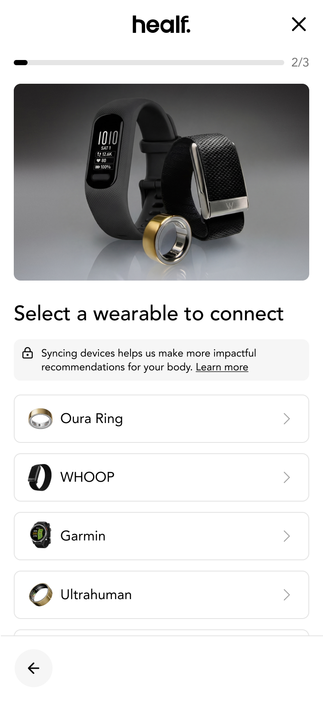
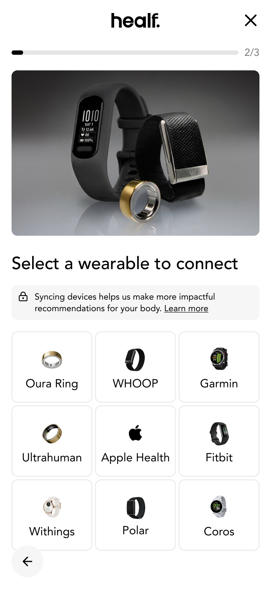
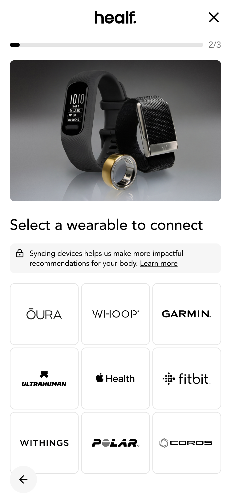
Connection flow
A quick, frictionless connect journey — select a wearable, authorise securely via Terra, and land on personalised results.
Why wearables
01
Continuous, quality data
Behavioural signal rather than declarative — it compounds over time instead of going stale, creating a self-reinforcing loop.
02
Category first-mover
No wellness-commerce platform had meaningfully done this. A moat, not a feature.
03
Zero ongoing user effort
A one-time connection replaces repeated manual input — the data keeps arriving without asking anything more of the user.
Results
+11%
Wearable connection rate
Of users with known compatible devices, connected within the first month of launch.
+4%
Conversion uplift
On recommended products, powered by wearable data.
+23%
AOV increase
Among users with connected wearables compared to non-connected users.
+18%
Return visit rate
Increase in 30-day return visits for connected users.
The loop, now working
Rich volume of data
Personalised recommendations
High confidence
Purchase
Credible user data
Industry first
Established Healf as one of the first wellness e-commerce platforms to meaningfully integrate wearable data into the shopping experience.
Process
Three phases took the idea from research to a live, iterating product.
01 · Discovery
Crystallising the direction
What users told us about sharing health data, and the insight that shaped every concept that followed.
02 · Design
Four key moments
Activation, onboarding, results and account management — the explorations, trade-offs and decisions behind each.
03 · Launch + iteration
Shipping and learning
Soft-launch feedback, the three interventions we shipped in response, and the ongoing iteration since going live.
Discovery
Before designing anything, we needed to understand how people felt about sharing health data. We conducted 12 interviews with Healf members and wearable users.
The north star
Key insight
Users were willing to share wearable data, but only if the value exchange was immediate, visible, and under their control. The immediacy of results and the quality of what came back became the design challenge.
Results display
Designing the results around a match score — giving every recommendation a visible reason to exist.
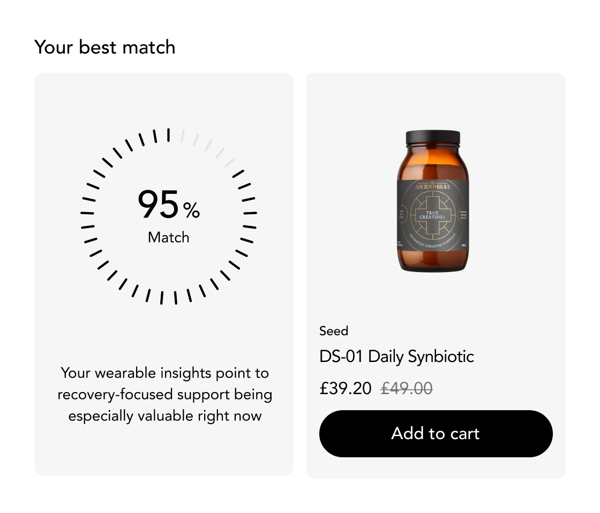
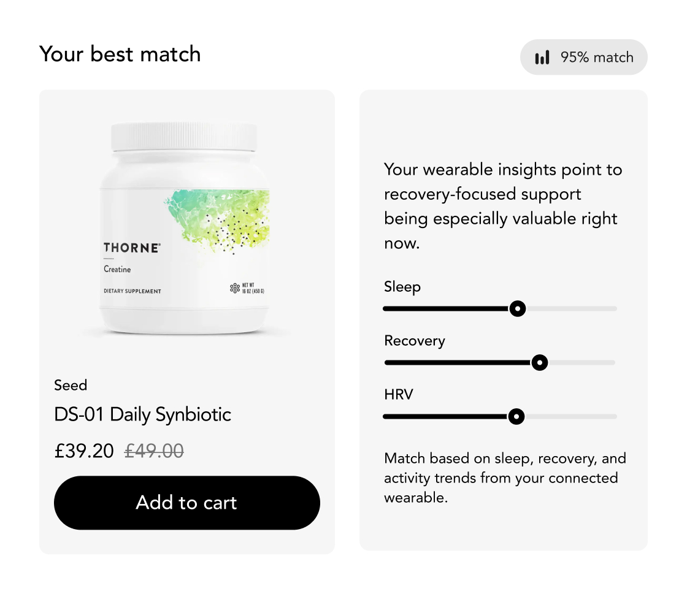
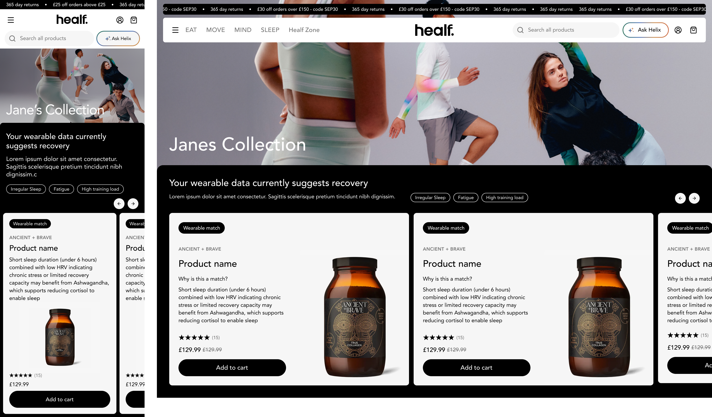
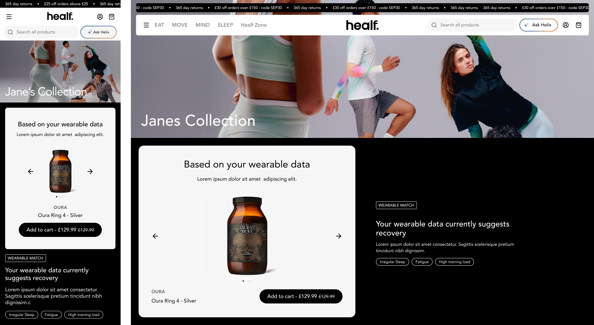
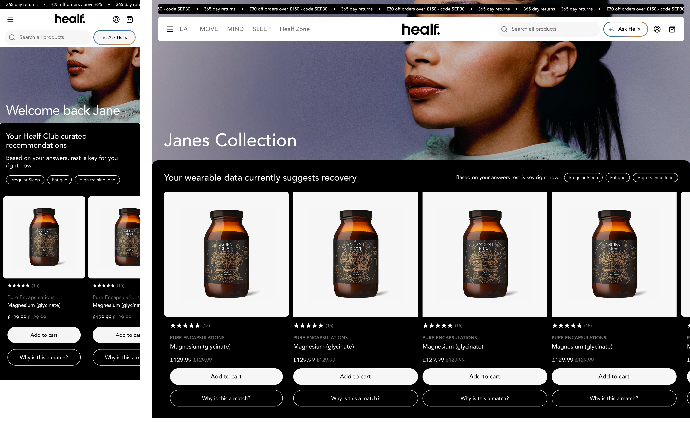
For You page
The post-connection destination — a carousel of recommended products tuned to the user's signal.
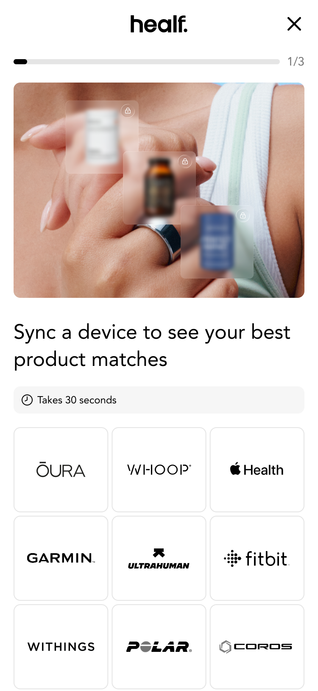
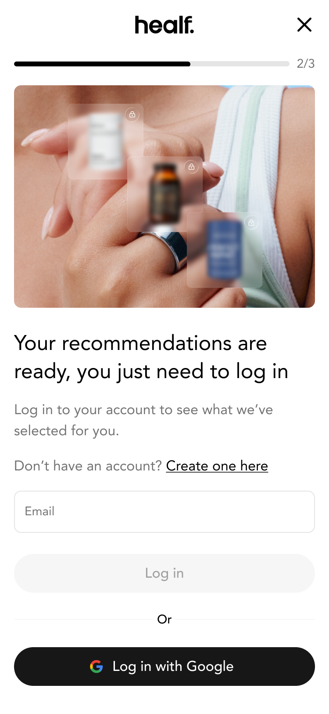
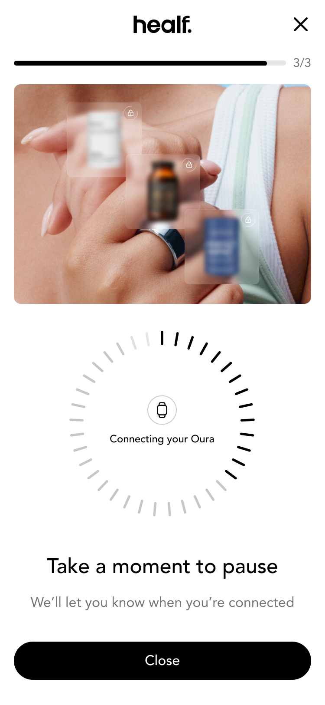
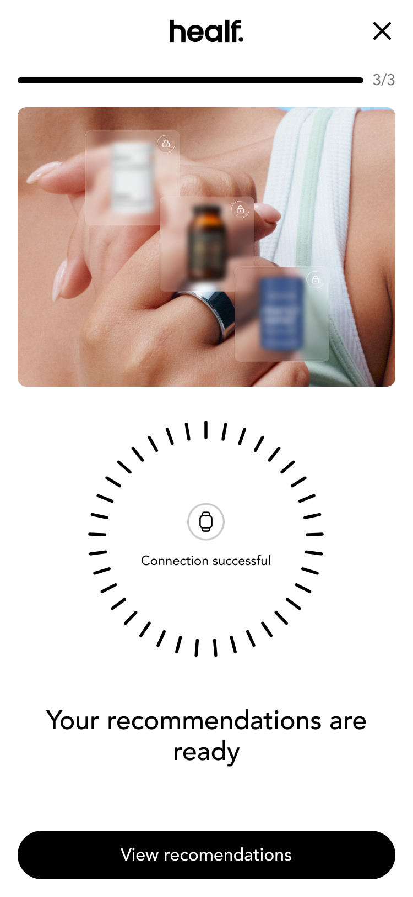
Framework
Each moment of the flow turned a research learning into a clear design principle.
Activation
The value had to be compelling enough that users wanted to connect in the first place.
Show the value upfront
Onboarding
We couldn't remove the login requirement, but we controlled what came before and after it — clarity and trust were the only levers.
Fast, clear and trustworthy
Results
Personalised recommendations had to feel worth the data the user had just shared.
Value, immediate and meaningful
Management
Users needed to see what's connected, pause sharing, and feel the relationship was theirs.
A clear place to manage health data
Data acquisition is the real feature
Better recommendations were a by-product. The durable win was a continuous, credible signal that compounds every time a user returns.
Trade a one-time quiz for a living loop
Passive wearable data replaced a snapshot that went stale — turning a one-off purchase into an ongoing engagement loop.
Trust is earned at the exchange
People will share sensitive data when the value back is immediate, visible and under their control.